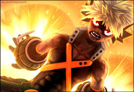

My Hero Academia: Powers
Izuku Midoriya
Gained the One For All power
One For All — Grants the user immense strength, speed, and agility, allowing for powerful punches and rapid movement. Over time, it stores power from previous users, making it stronger with each successor.
Katsuki Baguko
Izukus Frenemie
Explosion — Uses nitroglycerin-like sweat from his palms to create explosions. Bakugo can control the intensity, using them for offense, mobility, or defensive maneuvers.